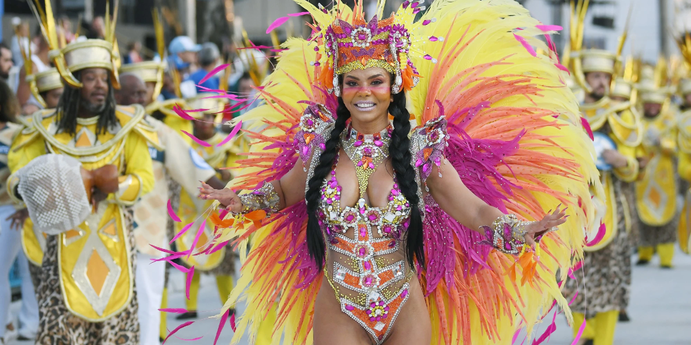
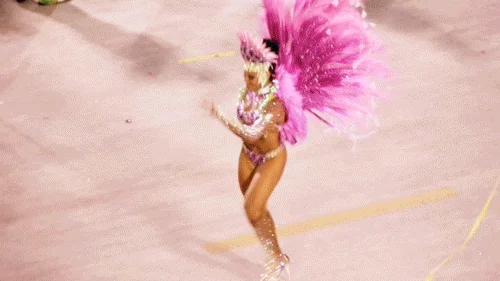

Le Carnaval de Rio est l'événement touristique le plus important de la municipalité de Rio et la fête nationale la plus populaire au Brésil, en particulier à Rio de Janeiro. Il est devenu un vrai synonyme de la célébration du carnaval dans le pays et même au monde. Il a lieu tous les ans durant les 2 semaines qui précèdent le mercredi des Cendres, qui est le jour qui marque le début du carême.

En 2018, le carnaval de Rio s'est tenu du 9 au 14 février, en 2019 du 2 au 9 mars, en 2020 du 21 au 26 février. Les réjouissances commencent après le signal du Rei Momo. À l'occasion du Carnaval, le maire lui transmet les clefs de la ville, l'aidant à trouver sa reine, une jeune fille choisie pour sa beauté et son expérience de la samba. Celle-ci gouvernera la ville durant les trois jours du carnaval.
À Rio, le carnaval débute dans les rues de la ville avec les bals pré-carnavalesques, les défilés des batucadas et des blocos. Généralement, un bloco est organisé par les habitants d'un quartier et défile dans les rues de ce quartier. Ces défilés commencent bien avant le carnaval, les premiers se tenant plus de 3 semaines avant le début officiel des festivités. Pendant le carnaval, des bals sont organisés dans les différents clubs de la ville. La mairie fait également des bals populaires ouverts à tous dans certains lieux traditionnels de la ville, comme Cinelândia.
